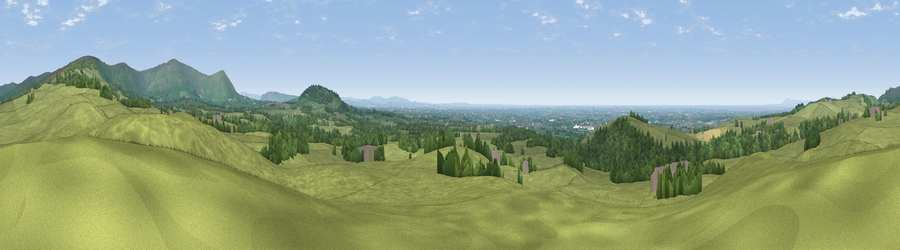

Viewpoint near Claughton
#6415 in England · top 17% of its area beats it · near Claughton · access?Where it is
The exact computed spot (SD 54012 44925). Click the marker for map links.
Public access: no public right of way or access land is recorded at this exact spot — it may be on private land. Computed from Natural England's CRoW access layer and OpenStreetMap rights of way — not the legal definitive map. Always verify locally.
The view, rendered

A 360° render of this exact spot computed from the terrain model, tree cover and land cover — summer colours, afternoon light, calibrated against photographs of famous viewpoints. Real trees, hedges and buildings will differ in detail.
The panorama
Grey silhouette: terrain skyline in each direction (720 bearings, Earth curvature and refraction included). Dashed green: skyline with trees (+15 m) and buildings (+8 m) as obstacles. Blue strip: how far the ground is visible on each bearing.
Where the view opens
Wedge length = distance to the farthest visible ground on that bearing (vegetation-aware). Rings at 10, 25 and 50 km.
What fills the view
83% grassland · 13% woodland · 2% cropland · 1% built-up ·
Angular shares of the visible panorama (visual magnitude), not map area. Landscape diversity 0.26 (0–1 Shannon).
Key numbers
More beautiful places nearby
The staircase of upgrades: each row has a higher view potential than everything closer. Driving times are estimates from straight-line distance, calibrated against real road routing — check an actual route before setting out.
| Place | Direction | Drive | Score |
|---|---|---|---|
| Viewpoint near Claughton | WSW · 1 km | ~4 min | 72.5 |
| Viewpoint near Bleasdale | NNE · 2 km | ~5 min | 74.5 |
| Viewpoint near Bleasdale | NNE · 2 km | ~6 min | 76.5 |
| Viewpoint near Scorton | NNW · 4 km | ~9 min | 79.9 |
| Darwen Hill | SSE · 27 km | ~43 min | 80.7 |
| Warton Crag | N · 28 km | ~45 min | 83.2 |
| Viewpoint near Grange-over-Sands | NNW · 36 km | ~55 min | 83.4 |
| Viewpoint near Cartmel | NNW · 39 km | ~58 min | 87.0 |
53.89844, -2.70134 · source: screening · position refined by local search. Computed location — check access rights before visiting.